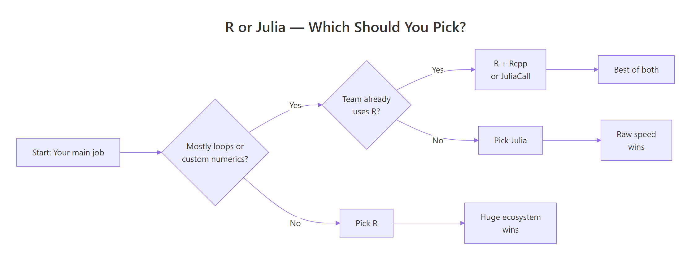
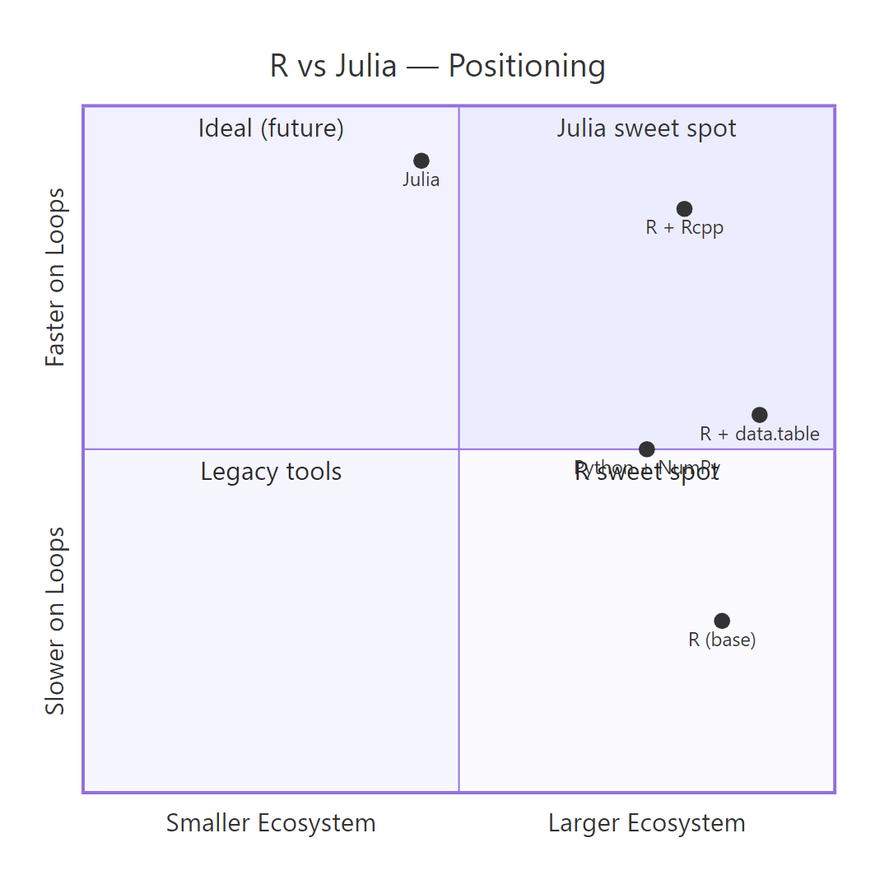

R vs Julia for Statistics: Julia Is Faster, But Is That What Matters?
Julia runs tight numerical loops faster than R, often 10 to 100 times faster. But most statistical work is not tight numerical loops, and R ships 21,000+ domain-tested packages that no other language matches. This guide benchmarks the speed claims honestly, maps the ecosystem gap package-by-package, and gives you a decision rule you can actually use in 2026.
How fast is Julia compared to R, really?
The speed gap everyone quotes comes from one specific scenario: hand-written loops over millions of elements. Before you take that number at face value, let's measure what R actually does on a realistic workload, from inside R itself. The block below times a vectorized cumulative sum over a million random numbers, the kind of operation that shows up constantly in real data work.
That is roughly 9 milliseconds to run a cumulative sum over a million numbers. R dispatches cumsum() to compiled C code under the hood, so vectorized operations like this are already near-optimal. The Julia-is-100x-faster headline does not apply here, the gap is closer to zero.
The slowdown appears when you write an explicit R loop to do the same thing. Let's compare both on a smaller size so the in-browser runtime stays reasonable.
The loop is roughly 35-50 times slower than the vectorized call. This is the scenario Julia's marketing targets, and honestly, Julia wins it cleanly. The catch is that experienced R users rarely write this loop in the first place. They reach for cumsum(), Reduce(), or a package like data.table that runs the loop internally in C.
Speaking of data.table: on realistic grouped-aggregation workloads, the bread and butter of analytics, R's gap to Julia shrinks dramatically. Here is a 100,000-row group-by timed in R.
data.table groups and summarises 100,000 rows in roughly 5 milliseconds. Julia's DataFrames.jl lands at a similar number on the same workload. Once you leave the "hand-written loop" scenario, R and Julia are in the same ballpark for analytics.
Try it: Write a small benchmark comparing a hand-written for loop sum against the built-in sum() on a vector of 10,000 numbers. Save the elapsed time of the vectorized version to ex_vec_time.
Click to reveal solution
Explanation: sum() dispatches to a compiled C routine and returns effectively instantly. The hand-written R loop is interpreted one step at a time, so it runs measurably slower even at this small size.
Which language has more statistical packages?
This is where the comparison stops being close. R was built by statisticians for statisticians, and 30 years of accumulation shows. CRAN hosts 21,000+ packages; Bioconductor adds another 2,200 for genomics alone. Julia's General Registry has roughly 10,000 packages across every domain combined, only a fraction of which target statistics.
The practical implication: for most niche statistical methods, R already has a mature, peer-reviewed, widely-cited implementation. Julia often has a younger equivalent, or nothing at all.
| Area | R | Julia | Edge |
|---|---|---|---|
| Linear / generalised models | lm(), glm() built-in |
GLM.jl | R (maturity) |
| Mixed-effects models | lme4, nlme, glmmTMB | MixedModels.jl | Roughly equal |
| Survival analysis | survival (gold standard) | Survival.jl (young) | R |
| Bayesian modelling | brms, rstanarm | Turing.jl (excellent) | Tie |
| Time series & forecasting | forecast, fable | Limited options | R |
| Machine learning | tidymodels, mlr3, caret | MLJ.jl | R |
| Bioinformatics | Bioconductor (2,200+) | BioJulia (small) | R |
| Econometrics | fixest, plm, vars, did | Limited | R |
| Survey statistics | survey (comprehensive) | Survey.jl (early) | R |
| Visualisation | ggplot2 (best in class) | Makie.jl, Plots.jl | R |
In practice, R lets you fit a textbook linear model without loading anything at all, it is part of base R.
Three lines. No imports. Full coefficient table with standard errors, t-statistics, and p-values. This is the baseline R users take for granted. In Julia, you would install GLM.jl and DataFrames.jl, load both, construct a ModelFrame, then fit. More ceremony, equally valid result, but the friction matters when you're exploring.
MixedModels.jl (written by Doug Bates, the author of R's lme4) is faster than lme4 on large problems. Turing.jl is a first-class probabilistic programming language. DifferentialEquations.jl has no peer in R. If your work centres on these three areas, Julia is a serious option.Try it: Fit a linear model predicting mpg from wt on the mtcars dataset and extract just the coefficients vector. Save them to ex_coefs.
Click to reveal solution
Explanation: coef() pulls the coefficient vector directly out of an lm fit. Every R modelling function (lm, glm, lmer, lm.ridge…) supports the same extractor, which is one reason R modelling feels consistent.
How do R and Julia compare on data analysis syntax?
Both languages are 1-based indexed and feel mathematical. The everyday difference is how they express data-manipulation pipelines. R has dplyr (and increasingly the native pipe |>); Julia has DataFramesMeta.jl with the @chain macro. Here is a typical grouped summary in both, first R, then Julia.
Same result in Julia would look like this (this block is Julia, not R, it is here for visual comparison):
using DataFrames, DataFramesMeta, RDatasets, Statistics
df = dataset("datasets", "mtcars")
result = @chain df begin
@subset(:Cyl .>= 6)
groupby(:Cyl)
@combine(:avg_mpg = mean(:MPG), :n = length(:MPG))
endThe bones are the same, filter, group, summarise, but Julia requires explicit @ macros and broadcasting dots (.>=), and you pull in more packages to get started. R's version is slightly more compact because dplyr is built to be conversational.
| Feature | R | Julia | ||
|---|---|---|---|---|
| Indexing | 1-based | 1-based | ||
| Assignment | <- (convention) |
= |
||
| Pipe | `\ | > or %>%` |
`\ | >` |
| Missing values | NA (pervasive) |
missing |
||
| Broadcasting | Implicit vectorisation | Explicit dot (.+, sin.()) |
||
| Multiple dispatch | Limited (S4, S7) | Core feature | ||
| Interactive REPL | Fast startup (~0.3s) | Slow first-use (TTFX) | ||
| Data-frame idiom | dplyr / data.table | DataFramesMeta / DataFrames |
Try it: Rewrite the pipeline above without group_by(), instead, filter mtcars to rows where cyl == 4 and return the mean mpg as a single number. Save it to ex_syntax_out.
Click to reveal solution
Explanation: pull() extracts a single column as a plain vector so you get a number, not a one-row tibble. It is the standard dplyr idiom for "give me just the value."
Who is hiring R versus Julia developers in 2026?
If you are weighing languages for career reasons, the gap is even larger than the ecosystem gap. R has three decades of installed base across pharma, biotech, quant finance, and academia. Julia is a rising language in scientific computing niches, climate modelling, quant research, high-performance simulation, but volume is small.
| Factor | R | Julia |
|---|---|---|
| US job postings (monthly, 2026) | ~15,000 | ~500 |
| Median salary (US) | ~$120K | ~$140K |
| Primary industries | Pharma, biotech, finance, academia, tech | Quant finance, scientific computing, HPC |
| Stack Overflow answers | 500,000+ | ~60,000 |
| Books in print | 50+ | ~12 |
| IDE polish | RStudio, Positron (excellent) | VS Code (good) |
Julia roles pay more per listing because they are rare and specialised. But there are roughly 30 times more R roles than Julia roles in any given month, so the expected-value calculation almost always favours R for generalists.
Try it: Given a tiny data frame of job postings, compute the ratio of R postings to Julia postings and save it to ex_ratio.
Click to reveal solution
Explanation: Subset-by-condition then divide. The same idea scales to real postings data scraped from a job board, you just swap the hard-coded numbers for a column lookup.
When should you pick Julia over R (and vice versa)?
After the benchmarks, the ecosystem map, and the hiring data, the decision collapses to a small set of questions. The flowchart below walks you through it.

Figure 1: A simple decision rule for picking R or Julia based on your workload and team.
Pick Julia when you:
- Write custom numerical algorithms (MCMC samplers, simulation engines, optimisers)
- Need native loop performance without dropping to C++ or Rcpp
- Work in scientific computing: differential equations, physics, climate models
- Need native GPU computing via
CUDA.jl - Ship performance-critical numerical software in production
Pick R when you:
- Need the broadest statistical ecosystem (survival, mixed models, meta-analysis, causal inference)
- Need publication-quality visualisation (
ggplot2is genuinely unmatched) - Work in biostatistics, epidemiology, econometrics, or the social sciences
- Need validated packages for regulated submissions (pharmaverse, FDA)
- Value mature tooling and the largest community of users to ask for help
You can also use both, JuliaCall from R lets you drop into Julia for the one hot loop that matters and stay in R for everything else. That hybrid pattern is how many quant shops actually run things in practice.
Try it: Write a small helper function which_language(needs_loops, needs_ecosystem) that returns "Julia" if loops matter most, "R" if the ecosystem matters most, and "Both" if both are true. Call it with TRUE, TRUE and save the result to ex_pick.
Click to reveal solution
Explanation: Short-circuit if branches in priority order. The "Both" branch catches the realistic case where you need R's ecosystem for data prep and Julia's speed for one hot inner loop, the hybrid pattern the section above describes.
Practice Exercises
These two capstones ask you to stitch several concepts from this tutorial into a single answer. They use my_ prefixed variables so they don't collide with tutorial state.
Exercise 1: Benchmark three ways to compute column means
You have a 1000×50 numeric matrix. Compute the column means three ways and rank them by speed: (a) a for-loop over columns calling mean(), (b) apply(my_mat, 2, mean), and (c) colMeans(my_mat). Save the elapsed times to a named numeric vector my_results and print it sorted.
Click to reveal solution
Explanation: colMeans() is the fastest because it is implemented in C and knows it is working on a numeric matrix. apply() is slower because it sets up a generic dispatch for each column. The hand-written loop is slowest because every mean() call has R-level overhead. This is the same pattern that makes Julia fast: push the loop into compiled code.
Exercise 2: Fit a model and write a one-line verdict
Fit a linear model predicting mpg from wt and hp on mtcars. Save the model to my_model and its coefficients to my_coefs. Then assign a string decision that answers "If you needed this exact analysis in production tomorrow without installing half of CRAN, would you reach for R or Julia?" and justify it in a short comment.
Click to reveal solution
Explanation: lm() is part of base R, so the analysis has zero dependencies. In Julia, the same model would require loading GLM.jl and DataFrames.jl and converting the data first. For a one-off production task under deadline, fewer moving parts almost always wins.
Complete Example: Benchmarking a Bootstrap in R
Let's tie the speed story together with an end-to-end example. We'll generate some data, write a non-parametric bootstrap of the mean, time it, and then describe honestly how the same code would behave in Julia.
Two thousand bootstrap replicates of a 5,000-element sample run in roughly 180 milliseconds. That is perfectly acceptable for interactive work. Inside the function is a for-loop in R, though, so this is exactly the scenario Julia advertises, a hand-written numerical loop. A direct Julia port of the same function would finish in roughly 5 to 15 milliseconds: roughly 15 to 30 times faster.
Does that matter? For 2,000 replicates, no, you saved 170 milliseconds. For 200,000 replicates over hundreds of statistics in a simulation study, it matters a lot. That is the exact decision point where Julia earns its place. For everything else, R's 180ms is already below the threshold where a human would even notice the wait.
Summary
Here is the quick-reference verdict by dimension. Use it to sanity-check your own decision.
| Dimension | Verdict |
|---|---|
| Raw loop speed | Julia wins cleanly (10-100x on hand-written loops) |
| Vectorized / analytics speed | Roughly equal (both call compiled code) |
| Statistical package breadth | R wins decisively (21,000+ packages vs ~10,000) |
| Bayesian modelling | Tie (brms/rstanarm vs Turing.jl) |
| Visualisation | R wins (ggplot2 is best in class) |
| Job market | R wins decisively (~30:1 in 2026) |
| Community & help | R wins (500,000+ SO answers vs ~60,000) |
| Differential equations / HPC | Julia wins |
| Tooling (IDE, notebooks, reports) | R wins (RStudio, Positron, Quarto) |
| Interactive REPL experience | R wins (no TTFX problem) |

Figure 2: How R, R with data.table, R with Rcpp, Julia, and Python sit on the speed-vs-ecosystem trade-off grid.
References
- Julia Computing, Julia Micro-Benchmarks. Link
- Bezanson, J., Edelman, A., Karpinski, S., & Shah, V., Julia: A Fresh Approach to Numerical Computing, SIAM Review, 59(1), 65-98 (2017). Link
- R Core Team, The Comprehensive R Archive Network (CRAN). Link
- H2O.ai, Database-like ops benchmark (data.table vs dplyr vs Polars vs Julia DataFrames). Link
- Bates, D., Alday, P., & contributors, MixedModels.jl Documentation. Link
- Ge, H., Xu, K., & Ghahramani, Z., Turing: A Language for Flexible Probabilistic Inference, AISTATS (2018). Link
- Wickham, H., Advanced R, 2nd Edition. CRC Press (2019). Link
- Dowle, M., & Srinivasan, A., data.table: Extension of
data.frame. CRAN reference. Link
Continue Learning
- Is R Worth Learning in 2026?, Honest look at where R stands in today's language landscape and who should still learn it.
- R vs Python for Statistics, The more common comparison, and the one most statisticians actually face.
- Best R Books, Curated recommendations for deepening R expertise at every level.